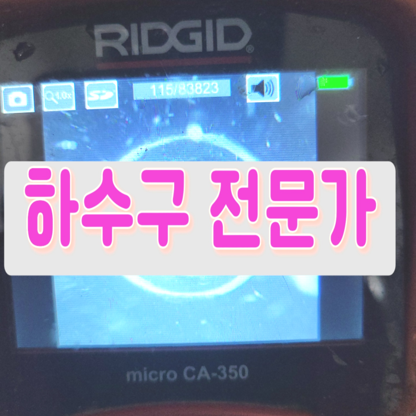
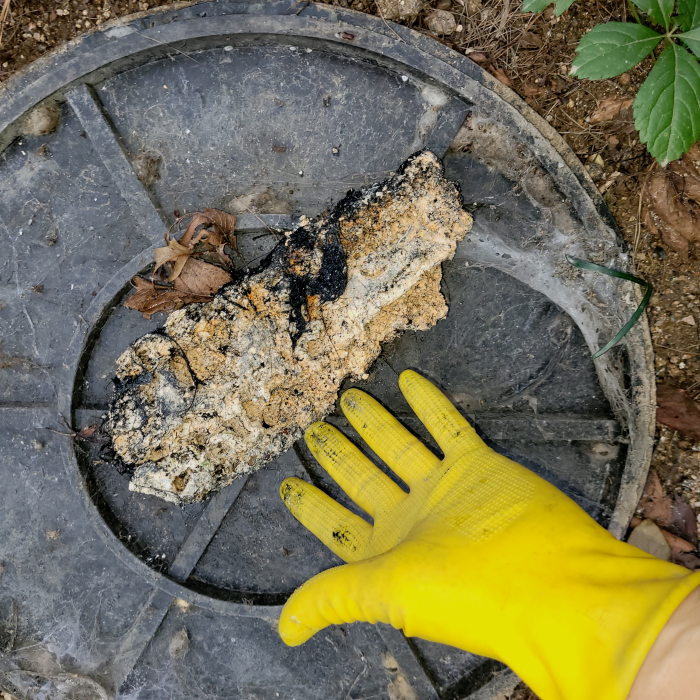
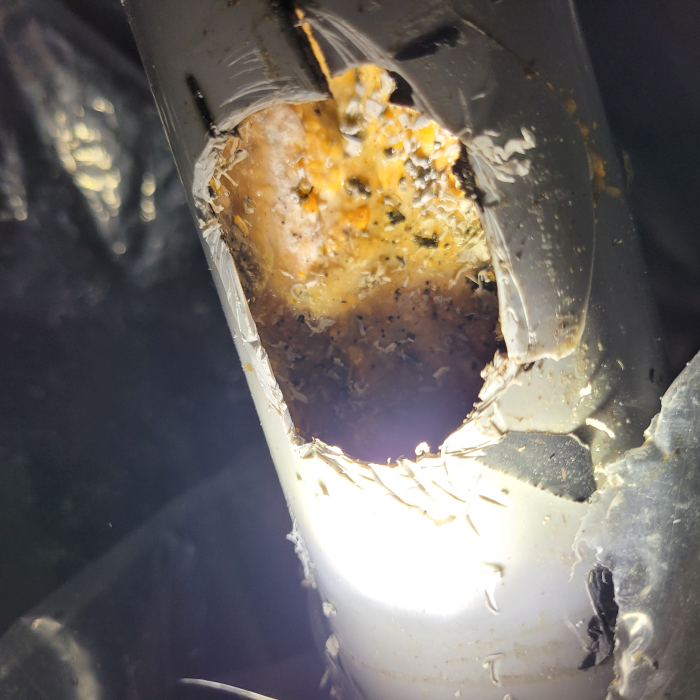
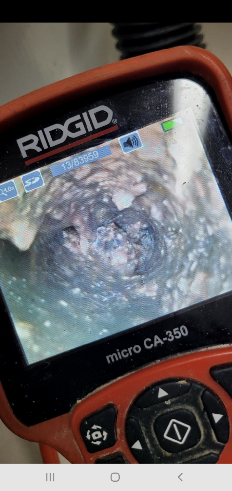
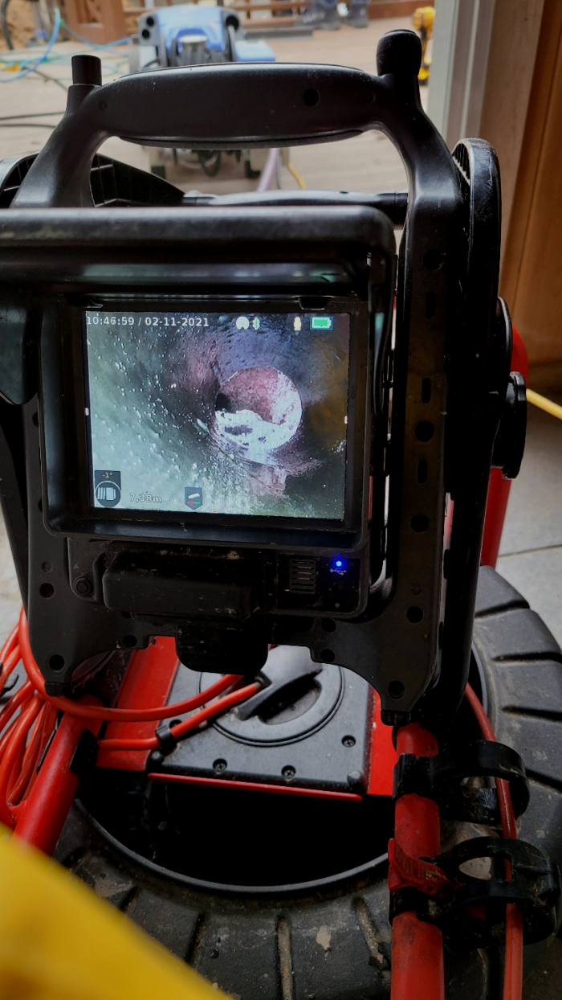
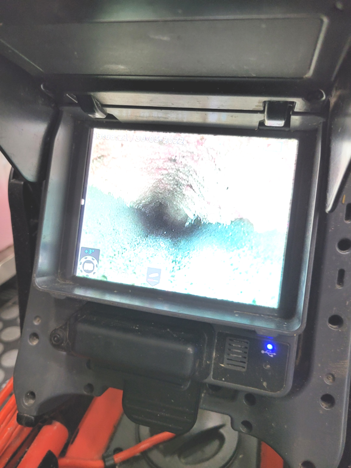
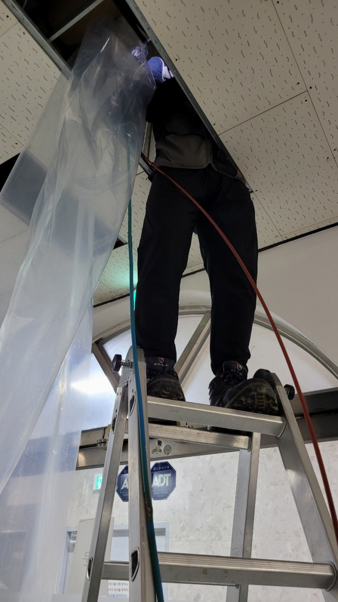

🏠 덕양구 삼송동 배수관막힘 원신동 배수구역류 하수구뚫는설비업체
용인 싱크대막힘 전문 시공 후기

📋 작업 개요
- 위치: 용인
- 서비스 유형: 싱크대막힘, 변기막힘, 하수구막힘, 배관막힘, 누수수리, 역류해결, 뚫는업체, 배관청소, 고압세척, 배관보수
- 작업 일시: 2024. 2. 10. 23:21
- 업체명: 하수구수사대 (010-5615-2118)
🔍 문제 상황
안녕하십니까^^
설비전문업체 "하수구수사대"를 찾아주셔서 감사합니다.
평상시처럼 우리들이 주방에서 설거지를 하고 있는데 배수관 물이 시원하게 빠지지 않는것 같은 느낌은 기분탓인가 하고 생각했던 분들 계시죠
집이나 사무실에서 배출구가 막혀버리면, 일상 생활이나 업무에 큰 불편함이 따르게 됩니다. 배수가 잘 되지 않으면, 목욕이나 설거지 같은 일상 활동에 지장이 생기고, 배출구가 역류하는 경우에는 상황이 더욱 심각해질 수 있습니다. 이런 문제를 미리 예방하기 위해서는 꾸준한 청소와 유지보수가 필요하다는 것이죠.

🔎 원인 분석
💡 전문가 진단: 덕양구 삼송동 배수관막힘 원신동 배수구역류 하수구뚫는설비업체
덕양구 삼송동 배수관막힘 원신동 배수구역류 하수구뚫는설비업체
막힌 것 자체가 스케일이 크기 때문에 오래 걸리더라도 실속 있는 업체에 의뢰 작업해야지라고 고려하시는 분들도 많습니다. 실력부분이 신중한 포인트라고 할지라도 늦기 전에 퇴수구뚫지 않으신다면 모든 피해를 여러분이 짊어지게 되므로 빨리 해결해야합니다.
정확한 배관수리가 필요한경우엔 자가수리는가능하면 멈추시길 바랍니다. 이런사태들에 대해서는 배관전문회사에 물어보셔야합니다.전문적실력을 가지고있어야 어려운상황일지라도 극복해낼수있는것입니다. 누구를 만나야 이런 불안함을 해결할수있을까요?
노후된 건물인 만큼 오래도록 누적된 상태로 쌓인 기름 찌꺼기 같은 것이 굉장히 많은 양으로 하수도배관을 빈틈없이 덮고 있었고, 이런 이유로 하수도배관 내부 자체가 웬만한건 물이 빠지는 게 힘이 들정도로 아주 좁아진 상태로, 무슨 까닭으로 물이 안빠졌는지 이해가 가는 상황이었습니다.
항상 배관막힘 사항들을 옆에서 지켜보시는 고객님께서도 처음에는 걱정스러운 마음이 가득했다면 작업 진행 후 한결 마음이 편해지고 믿음이 가신다고 하더라고요! 10년넘은 경력자분들만 구성되어있기 때문에 안심하셔도 좋습니다. 배관막힌 배관이나 깨진 배관도 확실하게 해결해드리며, 타업체와 달리 실패없는 전문최신장비 업체로 자리잡고 있어요.

🔧 작업 과정
배수구막힘 배관청소작업은 고압세척 그리고 이러한 작업은 플렉스 샤프트로 진행을 하는데요. 배수구세척에 사용하는 장비의 장점은 직접 하수관에 들어갈 수 있고 직접 슬러지를 분쇄해 준다는 점이 장점이라고 할 수 있습니다. 이 장비 덕분에 내부 덩어리를 깔끔히 제거할 수 있습니다.
부분은막히게 되는이유를 모르시는데요.사례를들자면 갑작스럽게 물건들을 떨어트리고난후 막혀버리지만 이러한상황외에는 계속해서 한위치에만있었던 쓰레기들이 배수구깊은곳에 쌓이게되다가 통수가안되서 그무엇도흐르지 않게된것이에요
여기서끝이아닌배수구 위치도 알려주는 장비는물론 고수압으로 처리가능한 크란즐세척기도 빠트릴수없죠. 이런것들을 대비하셨다면 문제가심화되었어도 금방뚫어버릴수있어요
진단을 위해서는 현장 점검이 필수입니다. 건물이나 집안마다 형태가 다르기 때문에 배출구배수관이 막히는 원인도 다양할 수밖에 없습니다. 화장실이라고 하면 단순히 변기만 막히거나 세면대만 막히는 것일 수 있지만 동시다발적으로 배출구막힘이 일어난다면 메인 배수 시설을 이물질이 막고 있는 것은 아닌지 의심해 볼 필요가 있습니다.
그런데 여기서 조심해야 할 것은 이물질이 많을 때 하나의 배수구장비로 밀어붙이게 되면 배관이 힘을 견뎌내지 못해 파손될 수 있습니다. 그렇게 되면 배수구배관에 생긴 크랙으로 인해 물이 새고 누수가 발생하여 아래층까지 피해입을 수도 있습니다.
이렇게 오랫동안 사용하지 않은 하수도는 석션기와 함께 쌓인 이물질들을 제거하는데 어려움이 있었지만, 전문적인 지식과 경험을 바탕으로 문제를 해결했습니다. 고객분들의 생활에 불편을 초래하는 하수도 문제에 대해 빠르고 정확한 서비스를 제공하여 만족도를 높이는 것이 목표입니다.
간혹 `전문성`을 앞세운 업체임에도 내시경 장비가 없어 원인 규명을 하지 못하는 사례도 있습니다. 내부 상황을 정확히 인지하지 못한 채 스프링 장비로 통수만 하고 철수하는 바람에 얼마 안 가 다시 배수구배관이 막힌 케이스도 있었습니다.
배수구 막힘이 발생해서 지금 당장 해결하고 싶은데 너무 늦어서, 혹은 너무 이른 시간이라 아니면 주말이라 어떤 배수구업체가 빠르게 올 수 있는지 몰라서 발만 동동 구르고 계신가요? 평일이든 주말이든 시간 상관없이 문제가 발생한 현장이라면 어디든 빠르게 방문합니다.


✅ 작업 완료
배수관 관련된 곳이라면 무엇이든 도맡아 하고 있으니 늦어지기 전에 막힌 배수관을 뚫어내고 싶으신 경우 밤낮없이 대기 중이니 통화 걸어 주시면 친절하게 맞이해 안내해 드립니다.
#하수구막힘 #하수구뚫음 #하수구역류 #씽크대막힘 #싱크대역류 #오수관막힘 #하수구청소 #욕실하수구막힘 #변기막힘 #하수구뚫는비용 #싱크대수리 #화장실막힘




⚠️ 베란다 누수 및 방수 관리 방법
- ✅ 비가 많이 올 때 창틀 주변이나 아래층 천장에 얼룩이 생기는지 정기적으로 확인해 보세요.
- ✅ 우수관 주변 실리콘 마감이 들뜨거나 깨진 틈새가 있는지 손상 여부를 수시로 체크하세요.
- ✅ 베란다 바닥 타일의 줄눈(메지)이 소실되면 그 틈으로 물이 침투하여 누수가 유발됩니다.
- ✅ 누수 의심 증상 발견 시 방치하면 아래층 손실이 커지므로 즉시 전문가의 진단을 받으십시오.
💡 핵심 정리
- 확실한 장비 작업(내시경 점검 및 샤프트 스케일링)으로 원인을 뿌리 뽑습니다.
- 작업 후 1년 이내에 동일한 부위 재발 시 100% 무상 A/S 서비스를 보장합니다.
- 서울 · 경기 · 인천 전 지역에 24시간 언제든 긴급 출동할 수 있도록 항시 대기 중입니다.
❓ 자주 묻는 질문 (FAQ)
🚨 용인 싱크대막힘 문제로 고민이신가요?
정확한 원인 진단과 확실한 시공으로 재발 없는 해결을 약속드립니다.
24시간 긴급 출동 | 서울 · 경기 · 인천 전지역 | 1년 내 재발 시 무상 A/S